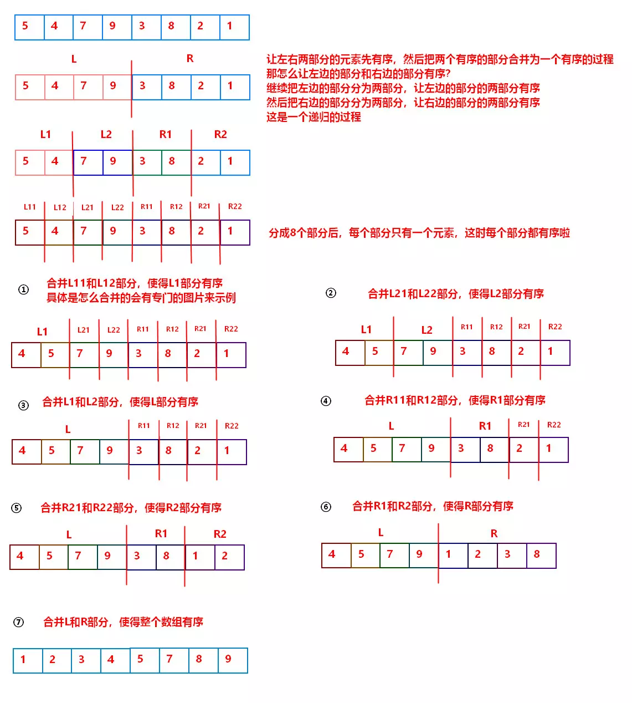

原文出处:本文由博客园博主yooooooo提供。
原文连接:https://www.cnblogs.com/linhaostudy/p/11772632.html
原文连接:https://www.cnblogs.com/linhaostudy/p/11772632.html
1. 归并排序
归并排序，是创建在归并操作上的一种有效的排序算法，效率为O(nlogn)。1945年由约翰·冯·诺伊曼首次提出。该算法是采用分治法（Divide and Conquer）的一个非常典型的应用，且各层分治递归可以同时进行。速度仅次于快速排序，为稳定排序算法，一般用于对总体无序，但是各子项相对有序的数列，归并排序的比较次数小于快速排序的比较次数，移动次数一般多于快速排序的移动次数。
2. 归并操作
归并操作，也叫归并算法，指的是将两个已经排序的序列合并成一个序列的操作。

3. 归并排序原理
既然归并排序采用的是分治法，并且依托于归并操作，那么其思想肯定是分而治之。我们知道归并操作是将两个有序的数列合并到一个有序的序列，那么对于一个无序的长序列，可以把它分解为若干个有序的子序列，然后依次进行归并。如果我们说每一个数字都是单独有序的序列，那么只要把原始长序列依次分解，直到每个子序列都只有一个元素的时候，再依次把所有的序列进行归并，直到序列数为1
4. 归并排序的实现方法
递归法
原理如下（假设序列共有n个元素）：
- 将原始序列从中间分为左、右两个子序列，此时序列数为2
- 将左序列和右序列再分别从中间分为左、右两个子序列，此时序列数为4
- 重复以上步骤，直到每个子序列都只有一个元素，可认为每一个子序列都是有序的
- 最后依次进行归并操作，直到序列数变为1

参考代码
void Merge(int r[],int r1[],int s,int m,int t)
{
int i=s;
int j=m+1;
int k=s;
while(i<=m&&j<=t)
{
if(r[i]<=r[j])
r1[k++]=r[i++];
else
r1[k++]=r[j++];
}
while(i<=m)
r1[k++]=r[i++];
while(j<=t)
r1[k++]=r[j++];
for(int l=0; l<8; l++)
r[l]=r1[l];
}
void MergeSort(int r[],int r1[],int s,int t)
{
if(s==t)
return;
else
{
int m=(s+t)/2;
MergeSort(r,r1,s,m);
MergeSort(r,r1,m+1,t);
Merge(r,r1,s,m,t);
}
}迭代法
原理如下（假设序列共有n个元素）：
- 将序列每相邻两个数进行归并操作，形成ceil(n/2)个序列，排序后每个序列包含两/一个元素
- 将序列每相邻的两个有序子序列进行归并操作，形成ceil(n/4)个序列，每个序列包含四/三个元素
- 重复步骤2，直到所有元素排序完毕，即序列数为1个
参考代码
void Merge(int*a,int low,int mid,int high)
{
inti=low,j=mid+1,k=0;
int *temp=(int*)malloc((high-low+1)*sizeof(int));
while(i<=mid&&j<=high)
a[i]<=a[j]?(temp[k++]=a[i++]):(temp[k++]=a[j++]);
while(i<=mid)
temp[k++]=a[i++];
while(j<=high)
temp[k++]=a[j++];
memcpy(a+low,temp,(high-low+1)*sizeof(int));
free(temp);
}
void MergeSort(int*a,int n)
{
int length;
for(length=1; length<n; length*=2)
{
int i;
for(i=0; i+2*length-1<=n-1; i+=2*length)
Merge(a,i,i+length-1,i+2*length-1);
if(i+length<=n-1)
Merge(a,i,i+length-1,n-1);
}
}
5. 复杂度
- 时间复杂度：O(nlogn)
- 空间复杂度：O(N)，归并排序需要一个与原数组相同长度的数组做辅助来排序
- 稳定性：归并排序是稳定的排序算法，
temp[i++] = arr[p1] <= arr[p2] ? arr[p1++] : arr[p2++];这行代码可以保证当左右两部分的值相等的时候，先复制左边的值，这样可以保证值相等的时候两个元素的相对位置不变。